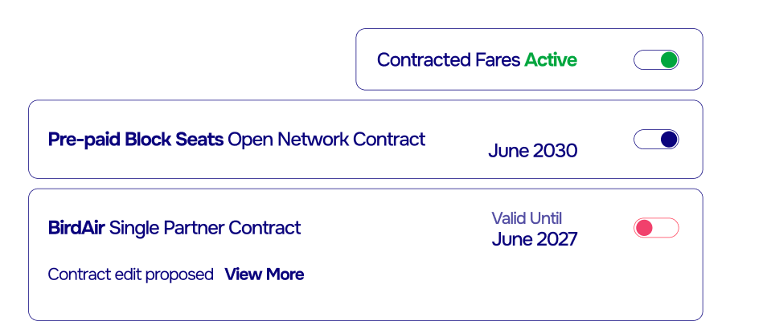
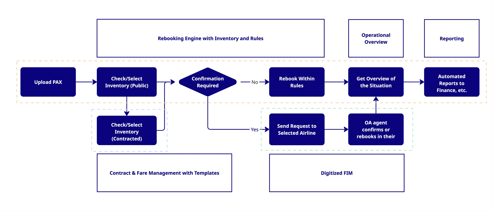

Introduction
Airline disruptions pose a major operational challenge, where the ability to rebook passengers on other carriers can determine whether recovery is smooth or chaotic.
Seat availability is often hidden, fares inconsistently applied, and managers lack real-time decision support. Additionally, FIMs and reconciliation add complexity, slowing recovery and increasing financial and operational risks.
Smaller or network-limited airlines also face high effort-to-benefit ratios in establishing rebooking partnerships, leaving them with fewer options during disruptions.
Key research objectives
- To analyze current industry practices for rebooking on OA.
- To identify operational and commercial challenges associated with contracted fares.
- To assess barriers to partnership formation.
- To explore opportunities for innovation in rebooking processes and tools.
Research methodology
The study employs a mixed-methods approach, combining qualitative interviews with airline managers and commercial teams with a review of relevant industry documentation and policies. Case examples of disruption events are also analyzed to illustrate current limitations and potential improvements.
Data sources
- Interviews with airline operational and commercial managers.
- Industry reports and regulatory documentation.
- Case studies of disruption management scenarios.
- Contracted fare agreements and reconciliation procedures.
- Analysis of ticketing workflows, including FIM issuance and settlement processes.
Disruption partnership contracts
Current challenges
Most commercial managers, especially in LCC, are faced with challenges like different systems, a different fare logic, and different rules for rebooking when they look for potential airline partners for disruptions.
Because of these their contracts, implementations and processes need to be rather complex and so many potential partnerships never happen because the effort outweighs the perceived benefit.
Key challenges include
- Different systems that don’t connect
- Inconsistent fare logic
- Varying rebooking rules
- Complex contracts and processes
Our vision
We’ve heard the same idea again and again in conversations with airlines: What if commercial managers could plug-and-play into a standard?
A standard way disruption fare contracts are set up and enforced.
A standardized process for how rebooking to other airlines works.
Now, imagine if commercial managers actually had that:
- Every contract would be instantly recognizable to partners.
- Teams could share agreements without getting lost in endless emails.
- Edits, updates, and expirations would be tracked automatically.
- Once signed, fares and rules would be instantly available in disruption scenarios.
Suddenly, partnerships become predictable, scalable, and low effort. And when disruptions hit, when every second counts, contracts stop being paperwork and become a real operational tool.

Contracts
- Simple: easy-to-use templates.
- Standardized: recognized across partners.
- Sharable: no more buried in inboxes.
- E-signatures: sign online, ready to use immediately.
- Enforceable: fares and rules apply directly in the rebooking process.
- blackout dates
- tiered pricing (e.g., closer to STD = lower price)
- ad-hoc stop of contracted fare availability

Commercial potential
A standardized, affordable rebooking process opens new opportunities:
- Increase overbooking confidence.
- Reduce direct disruption costs.
- Minimize compensation payouts.
- Improve yield management and reduce spoilage.
- Strengthen partnerships with clear, automated rules.
Rebooking on other airlines with and
without contracted fares
Current challenges
When disruption strikes, such as an aircraft-on-ground event at a remote outstation, operations managers face immense pressure to restore order. With hundreds of passengers affected and limited flight frequencies, they must evaluate complex scenarios.
Yet, the tools available to them are often inadequate.
As a result, even experienced managers operate under severe constraints, with disruption recovery hindered by fragmented systems and limited automation.
Key challenges include
- Lack of decision-support systems to identify optimal solutions.
- No access to bookable inventory, regardless of whether contracted fares exist.
- Limited visibility and tracking of disrupted passengers.
- Inconsistent actions by airport staff operating outside policy.
- Slow partner communication, often reliant on phone calls and emails.
- Dependence on fragile manual spreadsheets that are error-prone and difficult to maintain.
Our Vision
A standardized, intelligent rebooking process — designed for disruption
Today, rebooking on other airlines is constrained by fragmented tools, opaque availability, and the manual handling of contracted fares. Our vision is to change this by creating a standardized process that makes other-airline inventory not just visible, but bookable — with all contractual rules and restrictions applied automatically.

Key capabilities include
- Integrated contracted fares: Ability to search and book inventory with contracted fares applied instantly, ensuring commercial agreements are enforced without manual intervention.
- Dynamic control: Airlines can pause or adjust contracted fare availability in real time (e.g., stop usage during peak periods or restrict by route or tiered pricing rules).
- Flexible deployment: The solution can operate as a bolt-on to existing systems or as a standalone platform, enabling carriers to inject disrupted passengers directly into the system — either in bulk (via upload) or seamlessly connected to live operational feeds.
- Automation at scale: Instead of handling passengers one by one, airlines can manage entire disrupted groups, ensuring consistent treatment and rapid recovery.
- Full compliance: Every action is logged in an audit trail, providing transparency and accountability across teams and partners.
Why it matters
- Freedom from TMCs: Traditional travel management companies (TMCs) were never designed for large-scale airline disruption recovery. Their processes are opaque, slow, and costly, creating friction when speed is essential. Airlines need purpose-built tools that keep control in their hands.
- Unified workflows: A single shared platform replaces fragmented emails, calls, and spreadsheets, giving operations, commercial, and airport teams one view of passengers, inventory, and contracts.
- Resilient data management: Live, secure, and connected data eliminates the risks of fragile spreadsheets, ensuring accuracy under pressure.
- Scalable partnerships: Standardized contracts and automated enforcement reduce the overhead of negotiating and maintaining agreements, making it easier to build and expand rebooking networks.
The outcome is a disruption recovery process that is predictable, scalable, and efficient — shifting rebooking from a manual firefight into a strategic capability.
Digital FIM workflow
Current challenges
The current FIM process leaves airlines struggling with poor visibility and slow coordination. Once a passenger is issued an FIM, there is little clarity on whether they have been accepted, rebooked, or are still waiting.
Communication between airlines is often fragmented, relying on manual updates that slow down recovery and create uncertainty for both operations teams and passengers.
On the financial side, reconciliation remains complex and error-prone. Each transaction requires cross-checks across multiple systems, adding cost and effort at a time when speed and reliability are critical.
Key challenges include
- Slow and manual: Many airlines still depend on paper processes or require manual approvals, creating delays when speed is critical.
- No visibility of inventory: Agents cannot see available seats in real time, forcing guesswork and repeated requests.
- Lack of tracking and status overview: Once issued, FIMs provide little visibility into whether passengers are confirmed, boarded, or still awaiting rebooking.
- Complicated reconciliation: Settlement requires manual checks and cross-referencing, making the process error-prone and resource-intensive.
Our vision
Digitizing the traditional FIM process with inventory visibility, auditability, and secure partner flows.
The digital workflow replaces manual, paper-based FIM handling without requiring system integration. Agents can upload disrupted passengers, view partner airline inventory, and request rebooking. Partner airlines confirm requests directly within the platform, with all communications, policies, financials, and approvals logged in one place.
The potential to generate a valid boarding pass
Today’s FIM is little more than a paper note, or at best, a document like spreadsheet sent by email, with free-text details that are difficult to process.
A digital FIM would fundamentally change this by carrying structured passenger and ticketing data in a format the receiving airline’s system can ingest directly. This could be enabled through IATA-standardized data exchange protocols, such as NDC or ONE Order style records, allowing the disrupted airline to transmit a new “order” that the partner recognizes as valid.
For a boarding pass to “just work,” however, the partner airline must be able to trust the disrupted airline’s issuance. This requires a clear framework of business rules, including:
- Which fare values or booking classes are acceptable.
- How inventory buckets are mapped between carriers.
- Who assumes payment responsibility and how settlement is logged.
Such rules could be codified in digital contracts and enforced automatically within the digital FIM system, ensuring both operational integrity and financial accountability.
A digital FIM process is a live, transparent and trackable system
- Centralized passenger handling: Disrupted passengers can be injected directly into the system — either through bulk upload or automated feeds — without requiring custom development in the airline’s PSS.
- Real-time inventory visibility: Agents see available partner inventory immediately, eliminating blind requests and enabling faster, more informed recovery decisions.
- Automated partner communication: Requests are transmitted directly to the partner airline. Where integrations exist, bookings and approvals can be processed automatically under predefined rules. If manual action is required, partners can download a structured passenger list, complete bookings, and update statuses in a single step.
- Streamlined collaboration: All interactions, confirmations, and updates occur within one interface — replacing scattered emails and fragile spreadsheets with a clear, user-friendly workflow.
- End-to-end transparency: Policies, approvals, and financial commitments are logged in the same system, ensuring compliance and providing a reliable audit trail for reconciliation and settlement.
- Scalable adoption: Airlines can begin using the system without deep integrations. Over time, automation and rule-based processing can be layered in, reducing friction and increasing efficiency.

Decision support tool
Current challenges
During a major disruption, operations teams must balance destinations, connections, costs, and customer impact — often with incomplete or outdated data. Without effective tools, decisions take too long and leave passengers stranded.
Recovery is slowed by fragmented systems, limited automation, and heavy reliance on manual judgment. Even experienced managers are forced into reactive firefighting rather than proactive planning.
Key limitations today
- No real-time support: Managers lack systems that can instantly suggest recovery options.
- Data silos: Flight, hotel, and passenger data are spread across disconnected systems.
- Reactive decision-making: Teams spend valuable time comparing options manually.
- Inconsistent recovery: Passenger groups may receive uneven treatment depending on staff and location.
- Slow response: Without automation, recovery actions scale poorly when many passengers are affected.
Our vision
Disruption management requires evaluating countless scenarios in real time, something humans alone cannot do at scale.
AI changes this by simplifying complexity. Embedded into operations, it empowers staff to move from reactive firefighting to proactive, data-driven decision-making—enabling scalable and predictable disruption recovery.
How it works
The AI platform ingests and analyzes a wide range of inputs:
- Public data: flight schedules, hotels, ground transportation, nearby airports, regulatory requirements, and public fares
- Airline data: internal policies, NPS insights, claims history, and inventory (including contracted fares)
By combining these sources, the system delivers more than options. It produces fast, accurate, policy-compliant, and directly bookable recommendations.
Step-by-Step in Action
In the event of a major disruption—where many passengers are affected—the system guides operations and customer service teams through recovery in four clear stages:
1. Passenger grouping and mapping
- Ingests passenger data (via integration or manual upload)
- Groups travelers by final destination
- Flags urgency cases (e.g. unaccompanied minors, crew, special assistance)
2. Option discovery and cost estimation
AI scans live inventory and contracts to find recovery paths:
- Same-day flights from origin or nearby airports
- Next-day flights with hotel accommodation
- Ground transport + flight combinations
Each option is enriched with:
- Estimated cost per passenger and group total
- Time to destination and arrival waves
- Hotel and ground transport availability
- Expected NPS impact
- Compensation probability
3. Ranking and recommendations
For each passenger group, the system ranks three options:
- Cheapest — lowest total cost
- Fastest — earliest arrival
- Recommended — best trade-off across KPIs
4. Smart assignment simulation
- Simulate different combinations of routing options
- See total operational cost and arrival patterns
- Apply airline priorities, e.g.:
- “Minimize total cost”
- “Maximize same-day arrivals”
- “Reduce overnight hotel stays”
Reconciliation and financial management
Current challenges
Financial reconciliation is a critical part of disruption handling, but it’s often hidden from view. Airlines need to ensure that every transaction, rebookings, FIMs, or claims, is accurate, traceable, and transparent. Today, this process is slow, fragmented, and resource-intensive, making it hard to maintain control over costs and passenger compensation.
Traditional solutions, such as real-time settlement or ad-hoc spreadsheets, create extra overhead. Fragmented workflows, delayed approvals, and disconnected financial systems increase operational risk and reduce efficiency.
Key limitations today
- Manual and fragmented processes: Reconciling transactions requires multiple cross-checks across teams and systems.
- Lack of automation: Invoices, approvals, and cost tracking are handled manually, increasing errors and delays.
- Limited visibility: Teams cannot see aggregated balances in real time, making month-end reconciliation difficult.
- Complex integration: Connecting disruption tools with finance or ERP systems is often slow and costly.
Our vision
The future of financial management in disruption handling is built around **automation, integration, and smart balancing**. Rather than settling every transaction in real time, airlines can reconcile accounts at the end of the month, netting transactions to reflect actual usage and costs.
- Automated generation of invoices for every transaction, directly linked to bookings and claims.
- Seamless integration with ERP or accounting systems to automatically update financial records.
- End-of-month balancing that accounts for transactions in both directions, simplifying settlements and reducing transfers.
- Audit-ready records for transparency, compliance, and easy reporting.
Smart balancing: Instead of settling each transaction individually, the platform aggregates activity over the month. For example, if Airline A buys 20 seats from Airline B and Airline B later purchases 20 seats from Airline A, only the net difference needs to be settled at month-end. This approach:
- Reduces unnecessary transfers and operational overhead
- Maintains flexibility in liquidity management
- Ensures accurate financial reconciliation without daily settlement burden
By combining automated invoicing, ERP/accounting integration, and end-of-month balancing, airlines gain full transparency and control over disruption-related finances while keeping processes efficient and scalable.
Bringing it all together
Rebooking passengers on other airlines with contracted fares is one of the most difficult parts of disruption management. Agreements often exist on paper, but the actual process is slow and manual — involving phone calls, emails, and spreadsheets that make real-time recovery impossible.
Automating these agreements transforms rebooking from a reactive workaround into a reliable, scalable capability. With direct access to contracted fares, airlines can protect passengers faster, enforce rules consistently, and avoid unnecessary cost leakage.
Done right, contracted rebooking becomes more than an operational fix — it’s a strategic advantage that improves passenger trust, strengthens partnerships, and turns disruption into a managed opportunity.
Our research highlights that the future lies in automation, standardization, and smart workflows. By adopting digital tools for contracts, FIMs, decision support, and financial processes, airlines can:
- Restore disrupted passengers quickly and efficiently
- Apply contracted fares and rules consistently across partners
- Leverage AI-assisted decision-making for optimal recovery scenarios
- Automate financial reconciliation and end-of-month balancing
- Gain transparency and control while reducing operational overhead